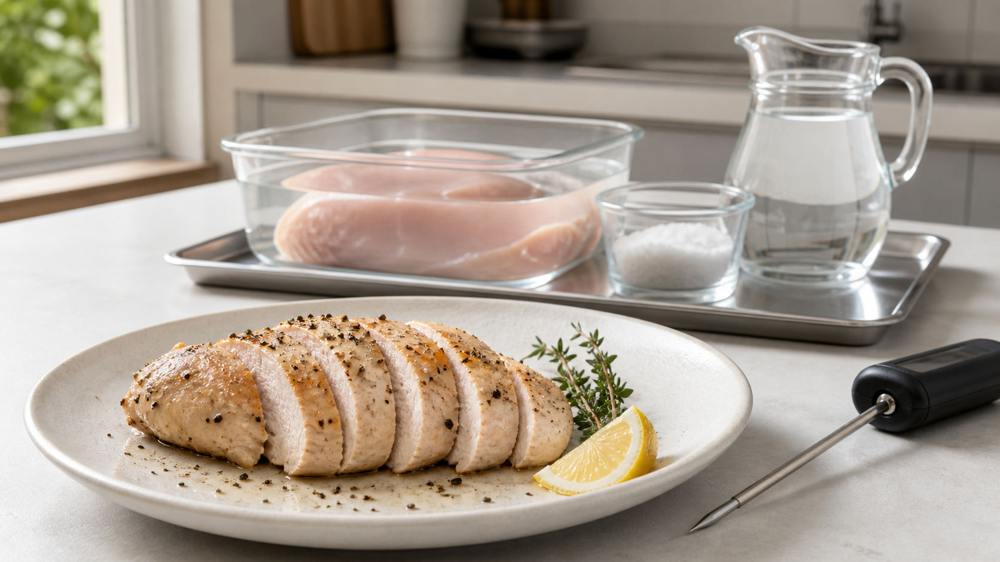

鶏むね肉は3％塩水でしっとりする？ 「浸透圧」だけでは説明できない話
鶏むね肉を焼くと、外側は香ばしいのに、中心はぱさぱさ。
そこで頼りたくなるのが、焼く前の塩水だ。「塩水につけると、浸透圧で水が中へ入る」と説明されることも多い。でも、これだけでは少し足りない。
塩水の仕事は、肉へ水を足すだけではない。筋肉のたんぱく質が水を抱えやすい状態へ変わり、加熱中に水が押し出されにくくなることが大切だ。
今日の結論
家庭で試すなら、水500gに塩15gを溶かした3％塩水へ、厚さ約2cmの鶏むね肉を冷蔵庫で1〜2時間つける。取り出したら洗わず、表面をペーパーでしっかり拭いて焼く。
鶏むね肉を使った2022年の一次研究では、3％塩水へ3℃で2時間つけた肉は、塩水処理をしない肉より、加熱で失う水分が少なくなる傾向を示し、やわらかさも保たれた。ただし、研究は低温調理器を使った条件だ。家庭のフライパンで同じ数字になるとは限らない。
そして、塩水につけても焼きすぎれば水は抜ける。塩水と温度管理は、どちらか一方ではなく、二つで一組だ。
水は「入る」より、「つかまえておく」が重要
鶏むね肉の中には、細長い筋肉の繊維が束になって並んでいる。加熱すると、その繊維や周りの組織が縮み、中にあった水を押し出す。フライパンへ透明な汁がたまり、肉が軽くなるのはこのためだ。
塩が肉へ入る動きを拡散（かくさん）という。濃い場所から薄い場所へ、少しずつ広がっていく動きだ。塩は筋肉のたんぱく質へ働きかけ、繊維同士の間隔や電気的な反発を変える。すると、たんぱく質の網目が広がり、水を抱え込める場所が増える。
筋肉の繊維を塩水へ入れて観察した古典的な研究では、調肉で使う程度の塩水中で筋肉の細い束が大きく膨らむことが示された。鶏むね肉だけを家庭条件で調べた研究ではないが、「塩がたんぱく質の間を広げ、水を保持しやすくする」という仕組みを支える結果だ。
だから、塩水につけた肉がしっとりする理由を「浸透圧で水が入るから」だけで終わらせると、本質を見落とす。塩がたんぱく質の状態を変え、入った水と元からあった水を逃がしにくくする。こちらがもう一つの主役だ。
3％塩水、2時間という数字はどこから来たのか
2022年の研究では、約110g、厚さ約2cmの鶏むね肉を3％塩水へ入れ、3℃で2時間置いた。その後、60℃または70℃の湯で45〜135分加熱して比べている。
塩水処理した肉は、全体として加熱中の重量減少が小さく、水分を保ち、食感もやわらかくなった。アミノ酸が調理液へ流れ出る量も抑えられた。
ただし、ここには重要な条件がある。
- 研究は温度を細かく管理できる低温調理だった
- 肉の大きさと厚さがそろっていた
- 家庭のフライパンのような高温の焼き面はなかった
つまり、3％塩水は有望な出発点だが、「どんな厚さでも2時間で必ず同じ」「強火で焼き続けてもぱさつかない」とは言えない。塩水は保険にはなるが、焼きすぎを帳消しにする魔法ではない。
家庭では、厚さをそろえてから塩水へ
材料（2人分）
- 鶏むね肉 2枚（合計400〜500g、皮なし）
- 水 500g
- 塩 15g
- 植物油 小さじ2
- 黒こしょう、レモン、好みの香草 適量
作り方
- 鶏むね肉が厚い場合は、包丁を横から入れて開き、約2cmの厚さにそろえる。
- 清潔な保存容器へ冷たい水500gと塩15gを入れ、完全に溶かす。鶏肉を沈め、ふたをして冷蔵庫で1〜2時間置く。研究条件へ近づけるなら2時間にする。
- 鶏肉を取り出し、使った塩水は捨てる。肉は洗わず、使い捨てのペーパーで表面をよく拭く。容器、作業台、触れた器具を洗浄する。
- フライパンへ油を入れ、中火で温める。鶏肉を並べ、片面を2〜3分ずつ焼いて色をつける。
- 弱火にしてふたをし、必要に応じて返しながら中心まで加熱する。最も厚い部分へ温度計を横から差し、74℃に達したことを確認する。
- 清潔な皿へ移して3分休ませる。塩は追加せず、こしょう、レモン、香草で仕上げる。
肉の厚さ、冷たさ、フライパンの材質で時間は変わる。だから「片面何分」より、中心温度を基準にするほうがぶれにくい。
半分だけ比べると、塩水の仕事が見える
同じ鶏むね肉を厚さと重さが近い二つへ分ける。片方は3％塩水、もう片方は真水へ、どちらも冷蔵庫で2時間つける。取り出したら同じように拭き、別々に重さを量り、同じフライパンで74℃まで焼く。
焼く前後の重さから、次の式で減った割合を出せる。
加熱で減った割合（％）＝（加熱前の重さ－加熱後の重さ）÷加熱前の重さ×100
数字に加えて、切ったときに皿へ出る汁、噛んだときのしっとり感、塩味も比べる。家庭実験は研究室の測定ではないが、自分が買う鶏肉と使うフライパンで、塩水が役立つかを判断できる。
塩水より先に守りたい、安全の線
塩水につけても、生の鶏肉が安全になるわけではない。米国農務省は、ブライン液への漬け込みは食品を安全にする工程ではないと案内している。冷蔵庫の中で漬け、使用後の塩水は捨て、容器と作業面を洗浄する。
生の鶏肉を水で洗うと、はねた水がシンクや周囲へ菌を広げるおそれがある。塩水から出した後もすすがず、ペーパーで拭けばよい。
米国農務省が示す鶏肉の安全な最低中心温度は74℃だ。薄い肉は、温度計を横から差して先端を中心へ置く。色や肉汁の透明さだけでは判断しない。
しっとり感は、塩水と温度の共同作業
鶏むね肉を塩水へつける意味は、水を無理に押し込むことではない。
塩で筋肉のたんぱく質を水を抱えやすい状態へ変え、加熱で押し出される水を減らす。そこへ、厚さをそろえることと、中心74℃で加熱を止めることを重ねる。
まずは水500g、塩15g、冷蔵庫で2時間。焼く直前に肉を洗わず、きちんと拭く。次の鶏むね肉は、火加減だけでなく、焼く前の2時間から変えてみよう。
参考文献
- Geng JT, et al. *Effect of brining on the physicochemical properties, texture, and flavor compounds of sous-vide cooked chicken breast meat*. Journal of Food Composition and Analysis. 2023;115:105010. https://doi.org/10.1016/j.jfca.2022.105010
- Offer G, Trinick J. *On the mechanism of water holding in meat: The swelling and shrinking of myofibrils*. Meat Science. 1983;8(4):245-281. https://pubmed.ncbi.nlm.nih.gov/22055626/
- Li S, et al. *Effects of Low-sodium Salt on the Physicochemical and Gel Properties of Chicken Breast Myofibrillar Protein*. Foods. 2021;10(8):1858. https://pmc.ncbi.nlm.nih.gov/articles/PMC8367399/
- U.S. Department of Agriculture, Food Safety and Inspection Service. *Poultry Basting, Brining, and Marinating*. https://www.fsis.usda.gov/food-safety/safe-food-handling-and-preparation/poultry/poultry-basting-brining-and-marinating
- U.S. Department of Agriculture, Food Safety and Inspection Service. *Food Thermometers*. https://www.fsis.usda.gov/food-safety/safe-food-handling-and-preparation/food-safety-basics/food-thermometers
※本記事は一般的な家庭調理の情報であり、医療上の助言ではない。塩分制限を受けている人は、医療者の指示を優先し、塩水処理を避けるか、食べる量と他の料理の塩分を調整すること。